Every automation decision runs through gate.py:run_gate(),
which calls two completely independent models — a generator
and a judge — neither of which sees the other's reasoning. The
diagram traces both parallel branches, their JSON-parsing fail-safes,
and the AND-logic that only allows execution when both approve.

| Node | Location | What it does |
|---|---|---|
| PARALLEL | gate.py:run_gate() | Both propose() and review() are called with the same raw situation text — the judge never sees the generator's rationale. This is deliberate: reviewing the generator's stated reasoning would invite rubber-stamping confident-sounding but wrong logic (anchoring bias). |
| GENPARSE / JUDGEPARSE | generator.py / judge.py | Both models are asked to respond in strict JSON. Each parse is wrapped in a try/except json.JSONDecodeError. On failure, the code doesn't crash — it fails safe by treating the response as REJECT, since an unparseable response can't be trusted as an approval. |
| ANDGATE | gate.py:run_gate() | The actual gate logic is one line: gate_approved = gen_approved and judge_approved. Both must independently say APPROVE — a single REJECT (or parse failure) from either side blocks execution. |
| EXECUTE | gate.py:execute_action() | Only reached when gate_approved is True. In this portfolio it's simulated ([SIMULATED EXECUTION]) rather than calling real infrastructure — but the gating logic upstream is exactly what would guard a real action. |
| AUDIT | gate.py:_append_audit() | Every single decision — approved or blocked — gets one JSON line appended to logs/audit.jsonl. This runs unconditionally, regardless of which branch was taken above. |
Generator says APPROVE, judge independently says APPROVE → AND-gate passes → action executes.
PARALLEL → GEN(APPROVE) + JUDGE(APPROVE) → ANDGATE(True) → EXECUTE → AUDITThe generator model (llama3.2:1b) sometimes over-weights "this is a production change" and REJECTs a legitimate rollback. The judge (qwen2.5:1.5b) correctly APPROVEs it. Because it's an AND-gate, the generator's mistake alone is enough to block — even though the judge got it right.
PARALLEL → GEN(REJECT) + JUDGE(APPROVE) → ANDGATE(False) → BLOCKED → AUDITIf either model's raw output fails json.loads(), that side's decision defaults to REJECT with a rationale describing the unparsable output — never silently treated as approval.